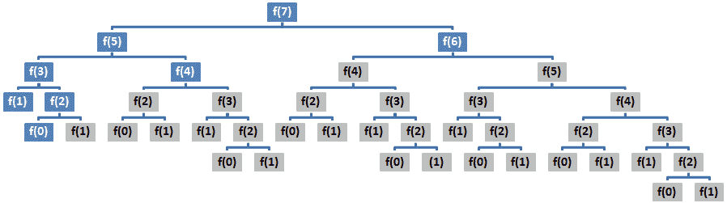
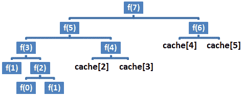
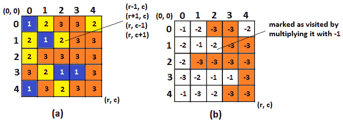
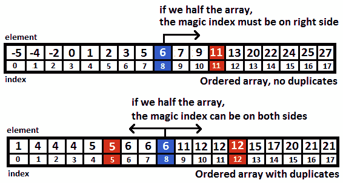
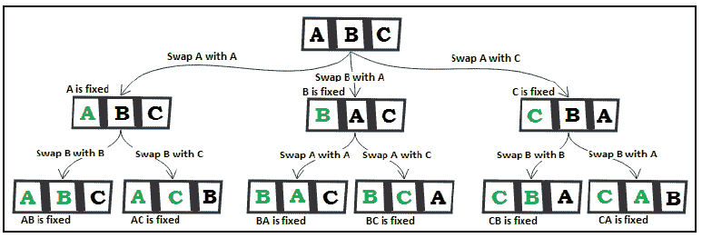
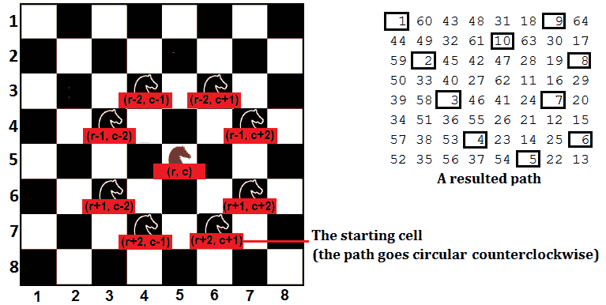
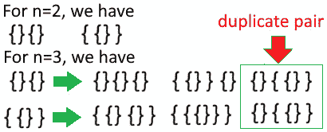
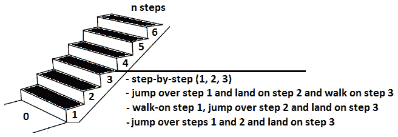
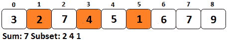
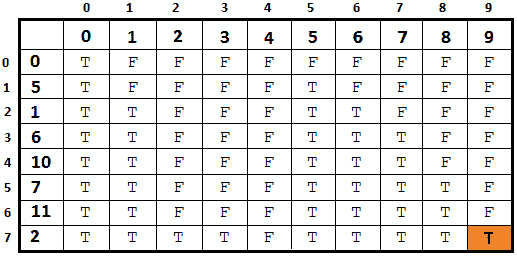

本章涵盖了采访者最喜欢的话题之一：递归和动态规划。两者都是齐头并进的，所以你必须能够涵盖两者。通常，面试官希望看到一个简单的递归解决方案。但是，他们可能会要求您提供一些优化提示，甚至编写代码的优化版本。换句话说，你的面试官会希望在工作中看到动态规划。
在本章中，我们将介绍以下主题：
到本章结束时，您将能够实现各种递归算法。您将拥有大量的递归模式和方法，可用于在几分钟内识别和实现工具带中的递归算法。让我们从议程的第一个主题开始：递归。
直接/间接调用自身的方法称为递归。这种方法称为递归方法。著名的斐波那契数问题可以递归实现，如下所示：
int fibonacci(int k) {
// base case
if (k <= 1) {
return k;
}
// recursive call
return fibonacci(k - 2) + fibonacci(k - 1);
}
本规范中有两个重要部分：
在我们试图通过递归算法解决问题之前，我们必须认识到它是这种算法的一个很好的候选者。访谈中使用的大多数递归问题都是著名的，因此我们可以通过名称来识别它们。例如，斐波那契数、数列求和、最大公约数、数的阶乘、递归二进制搜索、字符串反转等问题都是众所周知的递归问题。
但所有这些问题有什么共同点？一旦我们知道了这个问题的答案，我们将能够识别其他递归问题。答案很简单：所有这些问题都可以由子问题构成。换句话说，我们可以用一个方法返回的其他值来表示该方法返回的值。
重要提示
当一个问题可以建立在子问题的基础上时，它是递归求解的一个很好的候选者。通常，此类问题包括单词列出顶部/最后一个 n…，计算 nth或全部…，计算/找到所有解决方案…，生成所有案例。。。等。为了计算nth：。。。，我们必须计算nth-1、nth-2 等等，这样我们才能将问题划分为子问题。换句话说，计算 f（n）需要计算 f（n-1）、f（n-2）等等。练习是识别和解决递归问题的关键词。解决许多递归问题将帮助您识别它们，就像您眨眼一样容易。
接下来，我们将重点介绍动态规划的主要方面，并学习如何通过动态规划优化普通递归。
当我们谈论优化递归时，我们谈论的是动态规划。这意味着可以使用简单的递归算法或动态规划来解决递归问题。
现在，让我们将动态规划应用于斐波那契数，从简单的递归算法开始：
int fibonacci(int k) {
if (k <= 1) {
return k;
}
return fibonacci(k - 2) + fibonacci(k - 1);
}
Fibonacci 数的简单递归算法的运行时间为 O（2n），空间复杂度为 O（n）–您可以在第 7 章【算法大 O 分析】中找到解释。如果我们设置k=7，并将调用堆栈表示为调用树，则我们得到下图：
图 8.1–调用树（普通递归）
如果我们查看第 7 章中的大 O 图，算法的大 O 分析，那么我们会注意到 O（2n）远远不是有效的。指数运行时符合大 O 图的可怕区域。我们能做得更好吗？是的，通过备忘录方法。
当递归算法对相同的输入有重复调用时，这表示它执行重复工作。换句话说，一个递归问题可能有重叠的子问题，因此通往解决之路需要多次解决同一个子问题。例如，如果我们重新绘制 Fibonacci 数的调用树，并突出显示重叠问题，则我们将获得下图：

图 8.2–调用树（重复工作）
很明显，超过一半的呼叫是重复呼叫。
回忆录是一种用于删除方法中重复工作的技术。它保证对同一输入只调用一次方法。为了实现这一点，记忆化缓存给定输入的结果。这意味着，当应该调用该方法来计算已计算的输入时，记忆化将通过从缓存返回结果来避免该调用。
以下代码使用记忆优化斐波那契数的普通递归算法（缓存由缓存数组表示）：
int fibonacci(int k) {
return fibonacci(k, new int[k + 1]);
}
int fibonacci(int k, int[] cache) {
if (k <= 1) {
return k;
} else if (cache[k] > 0) {
return cache[k];
}
cache[k] = fibonacci(k - 2, cache)
+ fibonacci(k - 1, cache);
return cache[k];
}
如果我们从前面的代码中重新绘制调用树，那么我们将获得下图：

图 8.3–呼叫树（备忘）
在这里，记忆化明显减少了递归调用的数量。这一次，fibonacci（）方法利用了缓存的结果。运行时间从 O（2n）减少到 O（n），从指数减少到多项式。
重要提示
回忆录也称为自上而下方式。自上而下的方法不是很直观，因为我们通过解释如何从较小的解决方案开发最终解决方案，立即开始开发最终解决方案。这就像是说：
我写了一本书。怎样我写了它的章节。怎样我写了每章的章节。怎样我写了每个章节的段落。
空间复杂度保持为 O（n）。我们能改进它吗？是的，通过制表方法。
制表或自下而上方法，比自上而下更直观。本质上，递归算法（通常）从末尾开始向后运行，而自下而上算法则从开头开始。自底向上方法避免了递归，提高了空间复杂度。
重要提示
制表通常被称为自下而上方法。自下而上是一种避免递归的方法，非常自然。这就像是说：
我写了每个章节的段落。和我写了每章的章节。和我写了所有的章节。和我写了一本书。
自底向上降低了递归在建立调用堆栈时带来的内存开销，这意味着自底向上消除了获取堆栈溢出错误的漏洞。如果调用堆栈太大并耗尽空间，则可能会发生这种情况。
例如，当我们通过递归方法计算斐波那契（k）时，我们从k开始，然后继续以k-1、k-2，依此类推直到 0。使用自底向上方法，我们从 0 开始，继续从 1、2，依此类推，直到k。如下面的代码所示，这是一种迭代方法：
int fibonacci(int k) {
if (k <= 1) {
return k;
}
int first = 1;
int second = 0;
int result = 0;
for (int i = 1; i < k; i++) {
result = first + second;
second = first;
first = result;
}
return result;
}
该算法的运行时间仍为 O（n），但空间复杂度从 O（n）降低到 O（1）。因此，为了重述斐波那契数算法，我们有以下内容：
现在，是时候练习一些编码挑战了。
在接下来的 15 个编码挑战中，我们将利用递归和动态编程。这些问题经过精心设计，可帮助您了解并涵盖此类问题中的广泛问题。在本次编码挑战课程结束时，您应该能够识别并解决面试中的递归问题。
Adobe、微软
问题：我们有一个mxn网格。机器人被放置在此网格的左上角。机器人在任何时间点只能向右或向下移动，但不允许在某些细胞内移动。机器人的目标是找到一条从网格左上角到右下角的路径。
解决方案：首先需要设置mxn网格的一些约定。假设右下角有坐标（0，0），左上角有坐标（m，n，其中m是行，n是网格的列。因此，机器人从（m，n开始，必须找到（0，0）的路径。如果我们尝试为 6x6 网格绘制一个示例，那么我们可以获得如下结果：

图 8.4–确定移动模式
在这里，我们可以看到机器人可以从一个细胞（m，n）移动到相邻的细胞，可以是（m-1、n）或（m，n-1）。例如，如果将机器人放置在（5,5），则它可以转到（4,5）或（5,4）。此外，从（4,5）可以到（3,5）或（4,4），而从（5,4）可以到（5,3）或（4,4）。
所以，我们有一个问题，可以分为子问题。我们必须找到单元的最终路径（问题），如果我们能够找到相邻单元的路径（子问题），我们可以这样做。这听起来像一个递归算法。在递归中，我们从上到下处理问题，因此我们从（m，n开始，然后移回原点（0，0），如上图所示。这意味着从细胞（m，n，我们尝试进入（m，n-1）或（m-1，n。
将其转化为代码可以如下所示（对于我们不允许进入的单元格，迷宫[][]矩阵是一个布尔矩阵，其值为true——例如，迷宫[3][1]=true意味着我们不允许进入单元格（3,1））：
public static boolean computePath(int m, int n,
boolean[][] maze, Set<Point> path) {
// we fell off the grid so we return
if (m < 0 || n < 0) {
return false;
}
// we cannot step at this cell
if (maze[m][n]) {
return false;
}
// we reached the target
// (this is the bottom-right corner)
if (((m == 0) && (n == 0))
// or, try to go to the right
|| computePath(m, n - 1, maze, path)
// or, try to go to down
|| computePath(m - 1, n, maze, path)) {
// we add the cell to the path
path.add(new Point(m, n));
return true;
}
return false;
}
返回的路径存储为LinkedHashSet<点>。每一条路径包含m+n步，每一步只有两个有效选择；因此，运行时为 O（2m+n）。但是，如果缓存失败的单元（返回false），我们可以将此运行时间减少到 O（mn）。通过这种方式，记忆方法避免了机器人多次尝试进入失败的牢房。完整的应用程序称为机器人网格迷宫。它还包含备忘录代码。
使用机器人的另一个常见问题如下。假设我们有一个mxn网格。机器人被放置在此网格的左上角。机器人只能在任何时间点向右或向下移动。机器人的目标是找到从网格左上角到右下角的所有唯一路径。
RobotGridallPath应用程序中提供了简单的递归解决方案和自底向上方法。
编码挑战 2–河内塔
问题：这是一个经典的问题，在面试中随时都可能出现。河内的塔楼有三根杆子（a、B、和C和n圆盘）。最初，所有的磁盘按升序放置在一根杆上（最大的磁盘在底部（磁盘n），较小的磁盘在其上（n-1），依此类推（n-2、n-3、），直到最小的磁盘在顶部（磁盘 1）.目的是在遵守以下规则的情况下，将所有磁盘从该杆移动到另一杆：
解决方案：试图解决这些问题意味着我们需要想象一些案例。让我们考虑一下，我们想把圆盘从棒状体 T2 移动到一个 T3 层到杆体 T4。现在，让我们将n磁盘放在杆A上：
对于n=1：有一个圆盘，我们需要将一个圆盘从棒a移动到C。
对于n=2：我们知道如何移动单个磁盘。要移动两个，我们需要完成以下步骤：
对于n=3：让我们从下图中获得一些帮助：

图 8.5——河内塔（三个圆盘）
由于n=2，我们知道如何将顶部两个磁盘从A（原点）移动到C（目标）。换句话说，我们知道如何将顶部的两个圆盘从一根杆移动到另一根杆。让我们将它们从A移动到B，如下所示：
好的，这是我们以前做过的。接下来，我们可以将磁盘 2 和 3 移动到C上，如下所示：
继续这个逻辑，我们可以凭直觉移动四个磁盘，因为我们知道如何移动三个，我们可以移动五个磁盘，因为我们知道如何移动四个，依此类推。以棒A为原点，棒B为中间，棒C为目标，我们可以通过以下操作移动n磁盘：
在这一点上，很明显，我们有一个问题，可以分为子问题。根据前面两个项目符号，我们可以将其编码如下：
public static void moveDisks(int n, char origin,
char target, char intermediate) {
if (n <= 0) {
return;
}
if (n == 1) {
System.out.println("Move disk 1 from rod "
+ origin + " to rod " + target);
return;
}
// move top n - 1 disks from origin to intermediate,
// using target as a intermediate
moveDisks(n - 1, origin, intermediate, target);
System.out.println("Move disk " + n + " from rod "
+ origin + " to rod " + target);
// move top n - 1 disks from intermediate to target,
// using origin as an intermediate
moveDisks(n - 1, intermediate, target, origin);
}
亚马逊、谷歌、Adobe、微软、Flipkart
问题 T1：考虑一组 Ty2 t2，n 个男人排列成一个圆（1, 2, 3，…，…每k个人类将在圆圈周围被杀死，直到只剩下一个幸存者。写一个算法来找到这个幸存者的k位置。这就是众所周知的约瑟夫问题。
解决方案：记得我们之前有一条说明，当一个问题包含单词计算 nth和类似的表达式时，它可能是通过递归解决的一个很好的候选者。在这里，我们有找到 k 位置，这是一个可以划分为子问题并通过递归解决的问题。
让我们考虑 PoT T0＝N T1 T1＝15，并且 Ty2 T2，K Ont3，Ty＝3。因此，共有 15 名男子，每三名男子将被淘汰出圈外，直到只剩下一名。让我们通过下图将其可视化（这对于了解杀人模式非常有用）：

图 8.6–n=15 和 k=3 时的 Josephus
在找到幸存者之前，我们有五个回合，如下所示：
尝试识别模式或递归调用可以基于以下观察结果来完成。第一名男子（kth）被淘汰后，n-1 名男子被留下。这意味着我们调用约瑟夫（n-1，k）来获得n-1 人的位置。但是，请注意，约瑟夫（n–1，k）返回的位置将考虑从k%n+1 开始的位置。换言之，我们必须调整约瑟夫（n-1，k）返回的位置，以获得约瑟夫（n-1，k）+k-1）%n+1。递归方法如下所示：
public static int josephus(int n, int k) {
if (n == 1) {
return 1;
} else {
return (josephus(n - 1, k) + k - 1) % n + 1;
}
}
如果您发现这种方法非常棘手，那么可以尝试一种基于队列的迭代方法。首先，让n名男子排队。接下来，循环队列，对于每个人，检索并移除该队列的头（poll（）。如果检索到的人不是kth，则将该人重新插入队列中（add（）。如果这是第k个人，则中断循环并重复此过程，直到队列大小为 1。其代码如下：
public static void printJosephus(int n, int k) {
Queue<Integer> circle = new ArrayDeque<>();
for (int i = 1; i <= n; i++) {
circle.add(i);
}
while (circle.size() != 1) {
for (int i = 1; i <= k; i++) {
int eliminated = circle.poll();
if (i == k) {
System.out.println("Eliminated: "
+ eliminated);
break;
}
circle.add(eliminated);
}
}
System.out.println("Using queue! Survivor: "
+ circle.peek());
}
编码挑战 4–色斑
亚马逊、谷歌、Adobe、微软、Flipkart
问题 T1 问题：考虑一个 T2，3，3，x，4，4，C，5，5，格子，其中，T6，R，7，7 代表行，而 T8。每个单元格都有一个由数字k表示的颜色（例如，对于三种颜色，k=3）。我们将一个单元（或色点）的连接集定义为总单元，其中我们可以通过在行或列上的连续位移从相应单元开始，从而保持颜色。目标是确定最大连接集的颜色和单元数。换句话说，我们需要确定最大的色斑。
我们考虑一个 5x5 网格和三种颜色，其中我们有 Ty2 T2，r＝C＝Ont3，5，和 T4，k＝Ont5，3。接下来，让我们表示网格，如下图所示：

图 8.7–最大色斑（（a）-初始网格，（b）-已解决网格）
让我们关注图像（a）。在这里，我们可以看到，从一个单元移动到另一个单元最多可以在四个方向上完成（上、下、左、右）。这意味着，从一个细胞（r，c，我们可以尝试去（r-1、c）（r+1、c）（r、c-1）和【T14 r、c+1】。如果我们有从网格掉落的风险，或者目标单元格的颜色与当前单元格的颜色不同，则无法执行移动。因此，通过迭代每个单元（（0，0），（0，1），…（r，c），我们可以通过访问每个允许的单元并对其进行计数来确定该单元的连接集的大小（色斑的大小）。在图（a）中，我们有四个颜色为 1 的点，其大小分别为 1、1、1 和 2。我们还有六个颜色为 2 的斑点，大小分别为 1、1、2、1、1 和 1。最后，我们有三个点是颜色 3，其大小分别为 11、1 和 1。
由此，我们可以得出结论，最大的色斑大小为 11，颜色为 3。主要的是，我们可以认为第一个细胞的色斑是最大的斑点，并且每次我们发现比这个大的色斑时，我们用我们发现的一个代替这个。
现在，让我们关注图像（b）。为什么我们有负值？因为当我们访问一个单元格时，我们将其颜色值切换为-颜色。这是一个方便的约定，用于避免多次计算同一个单元的连接集。这就像说我们将此单元标记为已访问。按照惯例，我们不能在颜色为负值的单元格中移动，因此我们不会两次计算同一色点的大小。
现在，将这些观察结果粘在一起形成一个递归方法，得到以下代码：
public class BiggestColorSpot {
private int currentColorSpot;
void determineBiggestColorSpot(int cols,
int rows, int a[][]) {
...
}
private void computeColorSpot(int i, int j,
int cols, int rows, int a[][], int color) {
a[i][j] = -a[i][j];
currentColorSpot++;
if (i > 1 && a[i - 1][j] == color) {
computeColorSpot(i - 1, j, cols,
rows, a, color);
}
if ((i + 1) < rows && a[i + 1][j] == color) {
computeColorSpot(i + 1, j, cols, rows, a, color);
}
if (j > 1 && a[i][j - 1] == color) {
computeColorSpot(i, j - 1, cols,
rows, a, color);
}
if ((j + 1) < cols && a[i][j + 1] == color) {
computeColorSpot(i, j + 1, cols,
rows, a, color);
}
}
}
前面的递归方法computeColorSpot（）可以从给定单元格开始计算色斑的大小，下面的方法确定最大的色斑：
void determineBiggestColorSpot(int cols,
int rows, int a[][]) {
int biggestColorSpot = 0;
int color = 0;
for (int i = 0; i < rows; i++) {
for (int j = 0; j < cols; j++) {
if (a[i][j] > 0) {
currentColorSpot = 0;
computeColorSpot(i, j, cols,
rows, a, a[i][j]);
if (currentColorSpot > biggestColorSpot) {
biggestColorSpot = currentColorSpot;
color = a[i][j] * (-1);
}
}
}
}
System.out.println("\nColor: " + color
+ " Biggest spot: " + biggestColorSpot);
}
编码挑战 5–硬币
谷歌、Adobe、微软
问题 T1：考虑一个数量的单位。使用任何数量的四分之一（25 美分）、一角硬币（10 美分）、五分镍币（5 美分）和一分硬币（1 美分）计算您可以更改此金额的方式。
解决方案：假设我们必须兑换 50 美分。从一开始，我们就可以看到，换 50 美分是一个可以通过子问题解决的问题。例如，我们可以使用 0、1 或 2 个 25 美分兑换 50 美分。或者我们可以使用 0、1、2、3、4 或 5 角硬币。我们也可以使用 0、1、2、3、4、5、6、7、8、9 或 10 个镍币。最后，我们可以用 0，1，2，3，…，50 便士。让我们假设我们有 1 个 25 美分，1 个 10 美分，2 个 5 美分和 5 个便士。我们可以用我们的季度来表示：
计算变化（50）=1 个季度+。。。
但这就像是说：
计算变化（25）=0 个季度+。。。
我们没有更多的宿舍；因此，我们增加了一角：
计算更改（25）=0 个四分之一+1 个一角硬币+。。。
这可以减少，如下所示：
计算更改（15）=0 个 25 美分+0 个 10 美分+。。。
我们没有更多的一角硬币了。我们加上五分镍币：
计算变化（15）=0 个四分之一+0 个一角硬币+2 个镍+。。。
这可以归结为以下几点：
计算变化（5）=0 个四分之一+0 个一角+0 个镍+。。。
最后，由于我们没有更多的镍币，我们添加了便士：
计算更改（5）=0 个四分之一+0 个一角+0 个镍+5 个便士
这可以归结为以下几点：
计算变化（0）=0 个四分之一+0 个一角+0 个镍+0 个便士

图 8.8–将 n 美分换成 25 美分、10 美分、5 美分和 1 美分
可以通过递归实现此可简化算法，如以下代码所示。请注意我们使用回忆录来避免多次更改相同的金额：
public static int calculateChangeMemoization(int n) {
int[] coins = {25, 10, 5, 1};
int[][] cache = new int[n + 1][coins.length];
return calculateChangeMemoization(n, coins, 0, cache);
}
private static int calculateChangeMemoization(int amount,
int[] coins, int position, int[][] cache) {
if (cache[amount][position] > 0) {
return cache[amount][position];
}
if (position >= coins.length - 1) {
return 1;
}
int coin = coins[position];
int count = 0;
for (int i = 0; i * coin <= amount; i++) {
int remaining = amount - i * coin;
count += calculateChangeMemoization(remaining,
coins, position + 1, cache);
}
cache[amount][position] = count;
return count;
}
完整的应用程序称为硬币。它还包含简单的递归方法（没有记忆化。
问题 T1A:考虑一个 5x5 网格，有五个 T2 防御塔遍布网格。为了为电网提供最佳防御，我们必须在电网的每一排上建造一座塔。找到建造这些塔楼的所有解决方案，这样它们就不会共用同一根柱子和对角线。
解决方案：我们知道，在每一排上，我们必须建造一座塔，而在网格上建造它们的顺序并不重要。让我们画出一个解决方案和一个失败，如下所示：

图 8.9（a）-故障和解决方案
让我们关注解决方案，从第一行开始：第 0 行。我们可以在这一排的任何柱子上建造一座塔；因此，我们可以说：

图 8.9（b）：塔楼建造逻辑的第 1 部分

图 8.9（c）：塔楼建造逻辑的第 2 部分
我们从第一排开始，在（0,0）上建造第一座塔。我们走到第二排，试图建造第二座塔，这样我们就不会与第一座塔共用柱子或对角线。我们走到第三排，试着建造第三座塔，这样我们就不会与前两座塔共用柱子或对角线。我们对第四和第五座塔楼也遵循同样的逻辑。这是我们的解决方案。现在，我们重复这个逻辑——我们在（0,1）处建造第一座塔，并继续建造，直到找到第二个解决方案。接下来，我们在（0,2）、（0,3）和（0,4）处构建第一个塔，同时重复该过程。我们可以编写如下递归算法：
protected static final int GRID_SIZE = 5; // (5x5)
public static void buildTowers(int row, Integer[] columns,
Set<Integer[]> solutions) {
if (row == GRID_SIZE) {
solutions.add(columns.clone());
} else {
for (int col = 0; col < GRID_SIZE; col++) {
if (canBuild(columns, row, col)) {
// build this tower
columns[row] = col;
// go to the next row
buildTowers(row + 1, columns, solutions);
}
}
}
}
private static boolean canBuild(Integer[] columns,
int nextRow, int nextColumn) {
for (int currentRow=0; currentRow<nextRow;
currentRow++) {
int currentColumn = columns[currentRow];
// cannot build on the same column
if (currentColumn == nextColumn) {
return false;
}
int columnsDistance
= Math.abs(currentColumn - nextColumn);
int rowsDistance = nextRow - currentRow;
// cannot build on the same diagonal
if (columnsDistance == rowsDistance) {
return false;
}
}
return true;
}
编码挑战 7–魔法索引
Adobe、微软
问题 T1A:考虑一个排序数组的 Ty2 T2。如果数组k=k，则索引k是神奇的。编写一个递归算法来查找第一个魔法索引。
解决方案：首先，让我们快速绘制两个包含 18 个元素的排序数组，如下图所示。图像顶部的数组不包含重复项，而底部的数组包含重复项。这样，我们就可以观察到这些复制品的影响：

图 8.10–18 个元素的排序数组
如果我们在没有重复的情况下将数组减半，那么我们可以得出结论，魔法索引必须位于右侧，因为数组【8】<8。这是真的，因为魔法索引是 11，所以数组[11]=11。
如果我们用重复项将数组减半，我们将无法得到与之前相同的结论。魔法指数可以在两边。这里我们有数组[5]=5 和数组[12]=12。我们必须找到第一个魔法索引，所以我们应该先搜索左侧。
但我们如何找到它呢？最明显的方法是循环数组并检查数组i=i是否存在。虽然这适用于任何有序数组，但它不会给面试官留下深刻印象，因为它不是递归的，所以我们需要另一种方法。
在第 7 章算法大 O 分析中，您看到了一个通过二进制搜索算法在排序数组中搜索的示例。该算法可以通过递归实现，因为在每个步骤中，我们将前面的数组减半，并创建一个子问题。由于数组的索引是有序的，因此我们可以采用二进制搜索算法。我们面临的主要问题是重复的元素使搜索复杂化。当我们将数组对半时，我们不能说魔法索引在左边或右边，所以我们必须在两个方向上搜索，如下代码所示（首先，我们搜索左边）：
public static int find(int[] arr) {
return find(arr, 0, arr.length - 1);
}
private static int find(int[] arr,
int startIndex, int endIndex) {
if (startIndex > endIndex) {
return -1; // return an invalid index
}
// halved the indexes
int middleIndex = (startIndex + endIndex) / 2;
// value (element) of middle index
int value = arr[middleIndex];
// check if this is a magic index
if (value == middleIndex) {
return middleIndex;
}
// search from middle of the array to the left
int leftIndex = find(arr, startIndex,
Math.min(middleIndex - 1, value));
if (leftIndex >= 0) {
return leftIndex;
}
// search from middle of the array to the right
return find(arr, Math.max(middleIndex + 1,
value), endIndex);
}
}
问题 T1 问题：考虑一个 T2，T3，x，x，T4，n，n，T5，格子，其中每个（1，5，7，7，7）细胞有一个由 5 和 8 之间的数字表示的标高（其中，最高值是 8×8）。将球放置在网格的单元格中。这个球可以落入另一个单元格，只要该单元格的高程小于球形单元格。球可以落向四个方向：北、西、东和南。显示初始栅格，以及球落在所有可能路径上后的栅格。用 0 标记路径。
解决方案：始终关注问题请求。请注意，我们必须显示已求解的网格，而不是列出路径或对路径进行计数。显示网格的最简单方法是使用两个循环，如以下代码所示：
for (int i = 0; i < rows; i++) {
for (int j = 0; j < cols; j++) {
System.out.format("%2s", elevations[i][j]);
}
System.out.println();
}
现在，让我们绘制一个 5x5 网格并查看输入及其输出。下图显示了三维模型形式的初始网格，以及可能的路径和已求解的网格：

图 8.11–落下的球
我认为我们有足够的经验直觉地认为这个问题可以通过递归来解决。主要是，我们在所有可接受的方向上移动球，并用 0 标记每个访问的单元格。当我们在（i，j单元中有球时，我们可以进入（i-1、j、（i+1、j、（i、j-1）和（i、j+1）方向，只要这些单元的标高较小。在代码方面，我们有以下内容：
public static void computePath(
int prevElevation, int i, int j,
int rows, int cols, int[][] elevations) {
// ensure the ball is still on the grid
if (i >= 0 && i <= (rows-1) && j >= 0 && j <= (cols-1)) {
int currentElevation = elevations[i][j];
// check if the ball can fall
if (prevElevation >= currentElevation
&& currentElevation > 0) {
// store the current elevation
prevElevation = currentElevation;
// mark this cell as visited
elevations[i][j] = 0;
// try to move the ball
computePath(prevElevation,i,j-1,
rows,cols,elevations);
computePath(prevElevation,i-1,
j,rows,cols,elevations);
computePath(prevElevation,i,j+1,
rows,cols,elevations);
computePath(prevElevation,i+1,j,
rows,cols,elevations);
}
}
}
Adobe、微软、Flipkart
问题 T1 问题：考虑 Po.T2，n，T3，盒子，不同的宽度（Po.T5，W，T6，1…n），高度（Po.T7，h，T8，1…n），和颜色（Po.T9，C，To.T10，1…n）。找到符合以下条件的盒子的最高塔：
解决方案：让我们试着想象一下，如下所示：

图 8.12（a）–最高的彩色塔
我们有七个不同大小和颜色的盒子。我们可以想象，最高的塔将容纳所有这些盒子，b1。。。b7。但是我们有几个限制，不允许我们简单地堆叠盒子。我们可以选择其中一个盒子作为基本盒子，并在上面放置另一个允许的盒子，如下所示：

图 8.12（b）选择框来建造最高塔的逻辑
因此，我们确定了一种模式。我们选择一个盒子作为基础，然后我们试着看看剩下的盒子中有哪些可以作为第二层放在上面。我们对第三级也这样做，以此类推。当我们完成时（我们不能添加更多的盒子或没有盒子留下），我们存储最高塔的大小。接下来，我们使用另一个基本框重复此场景。
由于每个框的宽度和高度都必须大于其上方的框，因此我们可以按宽度或高度降序对框进行排序（选择哪一个并不重要）。这样，对于b0、【bk、k<n盒的任何塔，我们都可以通过搜索bk+1 来找到下一个有效盒。。。n间隔。
此外，我们可以通过记忆缓存最佳解决方案，从而避免重新计算同一基盒的最佳解决方案：
// Memoization
public static int buildViaMemoization(List<Box> boxes) {
// sorting boxes by width (you can do it by height as well)
Collections.sort(boxes, new Comparator<Box>() {
@Override
public int compare(Box b1, Box b2) {
return Integer.compare(b2.getWidth(),
b1.getWidth());
}
});
// place each box as the base (bottom box) and
// try to arrange the rest of the boxes
int highest = 0;
int[] cache = new int[boxes.size()];
for (int i = 0; i < boxes.size(); i++) {
int height = buildMemoization(boxes, i, cache);
highest = Math.max(highest, height);
}
return highest;
}
// Memoization
private static int buildMemoization(List<Box> boxes,
int base, int[] cache) {
if (base < boxes.size() && cache[base] > 0) {
return cache[base];
}
Box current = boxes.get(base);
int highest = 0;
// since the boxes are sorted we don’t
// look in [0, base + 1)
for (int i = base + 1; i < boxes.size(); i++) {
if (boxes.get(i).canBeNext(current)) {
int height = buildMemoization(boxes, i, cache);
highest = Math.max(height, highest);
}
}
highest = highest + current.getHeight();
cache[base] = highest;
return highest;
}
完整的应用程序称为最高级彩色电源。代码还包含解决此问题的简单递归方法（没有记忆化。
亚马逊、谷歌、Adobe、微软、Flipkart
问题：编写一个算法，计算字符串的所有排列，满足以下两个条件：
解决方案：与任何递归问题一样，关键在于识别不同子问题之间的关系和模式。马上，我们就可以直觉地知道，用重复字符排列字符串应该比用唯一字符排列字符串更复杂。这意味着我们必须首先了解具有唯一字符的字符串的排列。
排列字符串字符的最自然的方式可以遵循一种简单的模式：字符串的每个字符将成为字符串的第一个字符（交换它们的位置），然后使用递归调用排列所有剩余的字母。让我们深入研究一下一般情况。对于包含单个字符的字符串，我们有一个排列：
P（c1）=c1
如果我们添加另一个字符，那么我们可以表示如下排列：
P（c1c2）=c1c2 和c2c1
如果我们添加另一个字符，那么我们必须使用c1c2 来表示排列。c1c2c3 的每个排列代表c1c2 的顺序，如下所示：
c1c2->c1c2c3、c1cc2、c3c1c2
c2c1->c2c1c3、c2c3c1、c3c2c1
让我们用 ABC 替换c1c2c3。接下来，我们将 P（ABC）表示为一个图表：

图 8.13–排列 ABC
如果我们添加另一个字符，那么我们必须使用c1c2c3c4 来表示排列。c1c2c3c4 的每个排列代表c1c2c3 的一个顺序，如下所示：
c1c2c3->c1c2c3c4c1c2c2c3cT24cT26】c2cT24】c3、c4c1c2c3
c1c3c2->c1c3c2c4c1c3c4c2cT24cT28】c3cT】cT】cT】3cT】cc2、c4c1c3c2
c3c1c2->c3c1c2c4c3c1c4c2cT24cT26】c1cT28】cc2、c4c3c1c2
c2c1c3->c2c1c3c4、c2c1c4c3、c2cT24】T24c，c4c2c1c3
c2c3c1->c2c3c1c4c2c3c4cT22cT24cT28】c3cT】cT】cT】3cT】cT】cT24】T28】T】ccc1、c4c2c3c1
c3c2c1->c3c2c1c4c3c2c4ccT24cT26】c2cT】cT24】c1、c4c3c2c1
我们可以永远这样继续下去，但我认为很清楚可以使用什么模式来生成P（c1、c2、cn）。
因此，现在正是让我们的逻辑更进一步的时候。现在，是时候提出以下问题了：如果我们知道如何计算k1 个字符（c1c2……ck-1）的字符串的所有排列，那么我们如何使用这些信息来计算k字符（的字符串的所有排列 c1c2……ck-1ck）？例如，如果我们知道如何计算c1c2c3 字符串的所有置换，那么我们如何使用c1 表达c1c2c3c4 字符串的所有置换c2c3 排列？答案是从c1c2.ck 字符串中提取每个字符，并将c1c2.ck-1 排列附加到它，如下所示：
P（c1c2c3c4）=[c1+P（c2c3c4）】+[c【T17 2+P（ccT】3cT24】cT26】c1c2c4】+c4+P（c1c2c3）】
c1+P（c2c3c4】->c1c2c3c4、c1ccT23】T24cT26】T26】cT28】cT28】cT23】T24】T26】T24T26】T26】cT24】T26】T26】T26】cT24】T26】T26】T26】T26】cT26】T26】T23c2c4、c1c3c4c2、c1c4c2ccc1cT53】T54cT45】c2cT46】T47cc1T53】T53】cT53】cT53】cT53】cT53】c
c2+P（c1c3c4】->c2c1c3c4、c2ccT】4T24T26】cT26】T26】cT24】T26】T26】c3c1c4、c2c3c4c1、c2c4c1ccc2ccT53】T54c1T46】cT48】c2T53】T54cT53】cT53】cccT53】cT53】c【T4
c3+P（c1c2c4】->c3c1c2c4、c3ccT24】T24T26】cT26】T26】cT】cT24】T26】T24T24】T26】T26】cT24】T26】T26】T26】cT24】T24】T26】T24】T26】T26】T23cT24】T26】T242c1c4、c3c2c4c1、c3c4c1c2、c3ccT54】T54c1T46】c2】c3cT54】T54】T54cT55】cT54】T54】T54cT54】
c4+P（c1c2c3】->c4c1c2c3、c4ccT】3cT25】T24T26】cT26】cT24】T24】2c1c3、c4c2c3c1、c4c3c1c2、c4ccT53】T53T54c1T46】c2】cT49】4T55】cT53】T54cT55】cT54】
我们可以继续添加另一个字符并重复此逻辑，这样我们就有了一个递归模式，可以用如下代码表示：
public static Set<String> permute(String str) {
return permute("", str);
}
private static Set<String> permute(String prefix, String str) {
Set<String> permutations = new HashSet<>();
int n = str.length();
if (n == 0) {
permutations.add(prefix);
} else {
for (int i = 0; i < n; i++) {
permutations.addAll(permute(prefix + str.charAt(i),
str.substring(i + 1, n) + str.substring(0, i)));
}
}
return permutations;
}
这个代码可以正常工作。因为我们使用集合（而不是列表，所以我们尊重返回的排列列表不应包含重复的的要求。但是，我们确实会生成重复项。例如，如果给定的字符串是aaa，那么我们生成六个相同的排列，即使只有一个。唯一的区别是，由于集合不接受重复项，因此它们不会添加到结果中。这远远不够有效。
我们可以通过几种方式避免生成重复项。一种方法是先计算字符串的字符数，然后将它们存储在映射中。例如，对于给定字符串abcabcaa、键值映射可以是a=4、b=2、c=2。我们可以通过一个简单的助手方法实现这一点，如下所示：
private static Map<Character, Integer> charactersMap(
String str) {
Map<Character, Integer> characters = new HashMap<>();
BiFunction<Character, Integer, Integer> count = (k, v)
-> ((v == null) ? 1 : ++v);
for (char c : str.toCharArray()) {
characters.compute(c, count);
}
return characters;
}
接下来，我们选择其中一个字符作为第一个字符，并找到剩余字符的所有排列。我们可以这样表述：
P（a=4、b=2、c=2】=a+P（a=3、b=2、c=2】+b+P（a=4、b=2】、、c=】+[c+P（a=4，b=2，c=1）]
P（a=3、b=2、c=2】=a+P（a=2、b=2、c=2】+b+Pa=3、、T24】=b=b=T】T】c】、】】+[c+P（a=3，b=2，c=1）]
P（a=4、b=1、c=1=a+P（a=3、b=1、c=1】+b+P（a=4、b=1】、】+[c+P（a=4，b=1，c=0）]
P（a=4、b=2、c=1=a+P（a=3、b=2、c=1】+b+P（a=4、b=2】、c=】+[c+P（a=4，b=2，c=0）]
P（a=2、b=2、c=2】=a+P（a=1、b=2、c=2】+b+Pa=2、b=2】、c=】+[c+P（a=2，b=2，c=1）]
P（a=3、b=1、c=1】=。。。
我们可以继续写，直到没有剩余的字符。现在，将其放入代码行应该非常简单：
public static List<String> permute(String str) {
return permute("", str.length(), charactersMap(str));
}
private static List<String> permute(String prefix,
int strlength, Map<Character, Integer> characters) {
List<String> permutations = new ArrayList<>();
if (strlength == 0) {
permutations.add(prefix);
} else {
// fetch next char and generate remaining permutations
for (Character c : characters.keySet()) {
int count = characters.get(c);
if (count > 0) {
characters.put(c, count - 1);
permutations.addAll(permute(prefix + c,
strlength - 1, characters));
characters.put(c, count);
}
}
}
return permutations;
}
亚马逊、谷歌
问题 T1：考虑棋盘（8x8 网格）。在这块板上放置一个骑士，并打印其所有独特的动作。
解决方案：正如您已经看到的，解决此类问题的最佳方法是拿起一张纸和一支笔，勾画出场景。一幅画胜过千言万语：

图 8.14–骑士之旅
如我们所见，骑士可以从一个（r、c单元移动到最多八个其他有效单元；即，（r+2、c+1）、（r+1、c+2）、（r-1、c+2）、r-2、c+1】、r-2】、c-1】、、、、、、、等 r+1、c-2）和（r+2、c-1）。因此，为了获得从 1 到 64 的路径（如上图右侧所示），我们可以从给定的位置开始，递归地尝试访问每个有效的移动。如果当前路径不代表解决方案，或者我们已经尝试了所有八个单元格，那么我们将回溯。
为了尽可能高效，我们考虑以下几个方面：
COL[]={1,2,2,1，-1，-2，-2，-1,1}；
行[]={2,1，-1，-2，-2，-1,1,2,2}；
通过将所有内容按代码粘合在一起，我们获得以下递归方法：
public class KnightTour {
private final int n;
// constructor omitted for brevity
// all 8 possible movements for a knight
public static final int COL[]
= {1,2,2,1,-1,-2,-2,-1,1};
public static final int ROW[]
= {2,1,-1,-2,-2,-1,1,2,2};
public void knightTour(int r, int c,
int cell, int visited[][]) {
// mark current cell as visited
visited[r][c] = cell;
// we have a solution
if (cell >= n * n) {
print(visited);
// backtrack before returning
visited[r][c] = 0;
return;
}
// check for all possible movements (8)
// and recur for each valid movement
for (int i = 0; i < (ROW.length - 1); i++) {
int newR = r + ROW[i];
int newC = c + COL[i];
// check if the new position is valid un-visited
if (isValid(newR, newC)
&& visited[newR][newC] == 0) {
knightTour(newR, newC, cell + 1, visited);
}
}
// backtrack from current cell
// and remove it from current path
visited[r][c] = 0;
}
// check if (r, c) is valid chess board coordinates
private boolean isValid(int r, int c) {
return !(r < 0 || c < 0 || r >= n || c >= n);
}
// print the solution as a board
private void print(int[][] visited) {
...
}
}
亚马逊、谷歌、Adobe、微软、Flipkart
问题：打印n对花括号的所有有效组合。有效的组合是当花括号正确打开和关闭时。对于n=3，有效的组合如下：
{{{}}},{{}{}},{{}}{},{}{{}},{}{}{}
方案：n=1 的有效组合为{}。
对于n=2，我们立即将组合视为{}{}。然而，另一个组合包括在前一个组合中添加一对花括号；就是{{}。
更进一步，对于n=3，我们得到了平凡的组合{}{}{}。按照相同的逻辑，我们可以在组合中添加一对花括号，用于n=2，因此我们得到{{{}}，{{}}{}，{}{}{}，{}{}{}，{{}{}。
实际上，这是我们删除或忽略重复项后得到的结果。让我们以n=2 为基础，为n=3 构建做一个简单的例子，如下所示：

图 8.15-花括号重复对
因此，如果我们在每一对现有的花括号中添加一对花括号，并且我们也添加了平凡的情况（{}{}…{}），那么我们得到了一个可以通过递归实现的模式。然而，我们必须处理大量的重复对，因此我们需要额外的检查以避免在最终结果中出现重复。
所以，让我们考虑另一种方法，从一个简单的观察开始。对于任何给定的n，组合将有 2*n个花括号（不是成对的！）。例如，对于n=3，我们有六个大括号（三个左大括号（{{{{）和三个右大括号（}}}}））以不同的有效组合排列。这意味着，只要有一个有效的表达式，我们就可以尝试从零大括号开始构建解决方案，并向其添加左/右大括号。当然，我们会记录添加的花括号的数量，这样我们就不会超过最大数量 2*n。我们必须遵守的规则如下：
换句话说，这种方法的关键是跟踪允许的左大括号和右大括号的数量。只要有左大括号，我们就插入一个左大括号并再次调用该方法（递归）。如果右大括号比左大括号多，那么我们插入一个右大括号并调用该方法（递归）。那么，让我们开始编码：
public static List<String> embrace(int nr) {
List<String> results = new ArrayList<>();
embrace(nr, nr, new char[nr * 2], 0, results);
return results;
}
private static void embrace(int leftHand, int rightHand,
char[] str, int index, List<String> results) {
if (rightHand < leftHand || leftHand < 0) {
return;
}
if (leftHand == 0 && rightHand == 0) {
// result found, so store it
results.add(String.valueOf(str));
} else {
// add left brace
str[index] = '{';
embrace(leftHand - 1, rightHand, str, index + 1,
results);
// add right brace
str[index] = '}';
embrace(leftHand, rightHand - 1, str, index + 1,
results);
}
}
亚马逊、Adobe、微软
问题：一个人走上楼梯。他们一次可以跳一步、两步或三步。数一数他们到达楼梯顶部的可能途径。
解决方案：首先，让我们来设置跳跃一步、二步或三步的含义。考虑跳一步意味着一步一步地上楼梯（我们在每一步上着陆）。跳两个台阶意味着跳过一个台阶，然后在下一个台阶上着陆。最后，跳三步意味着跳过两步，在第三步着陆。
例如，如果我们考虑一个有三个步骤的楼梯，那么我们可以从四个步骤（或者，没有步骤）到步骤 3，从一个步骤到另一个步骤（我们在每一个步骤上着陆），我们跳过步骤 1 并在步骤 2 上着陆，然后在步骤 3 上行走，我们在步骤 1 上行走并且跳过步骤 2，从而在步骤 3 上着陆，或者我们直接在步骤 3 上跳跃，如下图所示：

图 8.16–楼梯（如何到达第 3 步）
通过在我们的逻辑中更进一步，我们可能会问自己如何达到步骤n。主要是，如果我们执行以下操作，就可以达到第n步：
但是，如果我们遵循前面的项目，则可以达到这些步骤中的任何一个-n-1、n-2 或n-3。例如，如果我们在n-2 和跳 1 步，我们可以达到n-1 步，如果我们在n-3步和跳 2 步，或者我们在n-4 步和跳 3 步。
因此，为了达到n步骤，我们有三条可能的路径。为了达到步骤n-1，我们还有三条可能的路径。因此，要达到这两个步骤，我们必须有 3+3=6 条路径。不要说 3*3=9 条路径！这是错误的！
现在，我们可以得出结论，以递归方式添加所有路径应该会得到预期的答案。此外，我们还可以利用我们的经验添加备忘录。通过这种方式，我们避免多次使用相同的输入调用该方法（与斐波那契数的情况完全相同）：
public static int countViaMemoization(int n) {
int[] cache = new int[n + 1];
return count(n, cache);
}
private static int count(int n, int[] cache) {
if (n == 0) {
return 1;
} else if (n < 0) {
return 0;
} else if (cache[n] > 0) {
return cache[n];
}
cache[n] = count(n - 1, cache)
+ count(n - 2, cache) + count(n - 3, cache);
return cache[n];
}
亚马逊、Adobe、微软、Flipkart
问题 T1：考虑正整数的一个给定的集合（AutoT2，ARR，To3T3）和一个数值。写一段代码，找出这个数组中是否有一个子集的和等于给定的s。
Po.T0.解决方案：让我们考虑数组，ORT T2。ARR ORD T3 TURE＝{ 3, 2, 7，4, 5, 1，6, 7, 9 }。如果s=7，则子集可以包含元素 2、4 和 1，如下图所示：

图 8.17–总和 7 的子集
包含元素 2、4 和 1 的子集只是可能的子集之一。所有可能的子集包括（3,4）、（2,4,1）、（2,5）、（7）、（1,6）和（7）。
让我们试着通过递归找到解决方案。如果我们添加子集arr[0]=3，那么我们必须找到s=s-arr[0]=7-3=4 的子集。为s=4 查找子集是一个子问题，可以基于相同的逻辑来解决，这意味着我们可以在子集中添加arr[1]=2，下一个子问题将包括为s=s-arr[1]=4-2 查找子集。
或者，我们可以这样想：从和开始=0。我们将arrarr【0】=3 添加到此总和中，作为总和=总和+arrarr【0】=3。接下来，我们检查和=s（例如，如果 3=7）。如果是这样，我们找到了一个子集。如果不是，我们将下一个元素arr[1]=2 添加到和中，作为和=sum+arr[1]=3+2=5。我们递归地继续重复这个过程，直到没有更多的元素添加。此时，我们递归地从sum中移除元素，并在每次移除时检查sum=s。换句话说，我们构建每个可能的子集，并检查其和是否等于s。当我们有这个等式时，我们打印当前子集。
到目前为止，很明显，如果我们递归地解决每个子问题，那么它将引导我们得到结果。对于从到的每个元素，我们必须做出决定。主要有两种选择：在子集中包含当前元素或不包含当前元素。从这些语句开始，我们可以创建以下算法：
让我们看看代码：
/* Recursive approach */
public static void findSumRecursive(int[] arr, int index,
int currentSum, int givenSum, int[] subset) {
if (currentSum == givenSum) {
System.out.print("\nSubset found: ");
for (int i = 0; i < subset.length; i++) {
if (subset[i] == 1) {
System.out.print(arr[i] + " ");
}
}
} else if (index != arr.length) {
subset[index] = 1;
currentSum += arr[index];
findSumRecursive(arr, index + 1,
currentSum, givenSum, subset);
currentSum -= arr[index];
subset[index] = 0;
findSumRecursive(arr, index + 1,
currentSum, givenSum, subset);
}
}
这段代码的时间复杂度是 O（n2n），所以它远远不够高效。现在，让我们通过动态编程尝试一种迭代方法。这样，我们就避免了重复解决同一个问题。
通过动态规划，我们可以在 O（s*n）中解决这个问题。更准确地说，我们可以依赖于自底向上方法和一个布尔维矩阵（n+1）x（s+1），其中n是集合的大小（arr。
要理解这个实现，您必须理解这个矩阵是如何填写的，以及它是如何读取的。如果我们认为给定的 Tr0 To.TaleT1 的{{ 5, 1, 6，10, 7, 11，2 }和 Po.T2} S Ty3Tube＝9，那么这个 Ty4T4 布尔布尔 T5 矩阵从一个初始状态开始，如下图所示：

图 8.18–初始矩阵
所以我们有s+1=9+1=10 列和n+1=7+1=8 行。如您所见，我们已经填充了第 0 行和第 0 列。这些是基本情况，可以解释如下：
接下来，我们取每一行（5, 1, 6，…），然后尝试用 F 或 T 填充它。让我们考虑第二行，其中包含了 AutoT0E.Enter 元素 5。现在，对于每一列，让我们回答以下问题：我们可以将列编号与 5 相加吗？让我们看看输出：

图 8.19–填充第二行
...
...
我们可以试着把这个问题应用到剩下的每一行中，但是我们前进的越快，问题就越难解决。此外，如果没有算法，我们无法在代码中实现这个问题。幸运的是，我们可以采用一种可以应用于每个（行、列单元的算法。此算法包含以下步骤：
A.如果单元（i-1，j是 T，那么我们也用 T 填充（i，j单元。
B 如果单元格（i-1，j为 F，则我们将（i，j单元格中的值填入（i-1，j-element_ 在 _ 此行）。
如果我们将此算法应用于第二行（包含元素 5），那么我们将获得与下图所示相同的结果：

图 8.20–将算法应用于第二行
按照步骤 1，对于 5<1、5<2、5<3 和 5<4，我们从前面的单元格复制值。当我们到达单元（1，5）时，我们有 5=5，所以我们需要应用步骤 2。更准确地说，我们采用步骤 2b。单元（1-1，5-5）是具有值 T 的单元（0，0）。因此，单元（1，5）被 T 填充。相同的逻辑适用于其余单元。例如，单元（1，6）被 F 填充，因为 F 是（0，5）处的值；由于 F 是（0,6）处的值，所以（1,7）处的单元格用 F 填充，依此类推。
如果我们将此算法应用于所有行，则得到以下填充矩阵：

图 8.21-完整矩阵
请注意，我们突出显示了（7,9）处的最后一个单元格。如果右下角单元格的值为 T，那么我们说至少有一个子集满足给定的和。如果它是 F，那么就没有这样的子集。
在这种情况下，有一个子集的和等于 9。我们能识别它吗？是的，我们可以通过以下算法：
A.如果这一行上方的单元格（i-1、j）为 F，则记下该行的元素（该元素是子集的一部分）并转到单元格（i-1、j-元素【U】在该行）。
B 当这个上面的细胞（i-1，j是 T 时，我们向上移动这个细胞（i-1，j。
C 从步骤 1a重复此步骤，直到整个子集被写下。
让我们在本例中绘制子集的路径：

图 8.22–子集解决方案路径
因此，我们从右下角的单元格开始，它位于（7，9），值为 T。因为这个单元格是 T，我们可以尝试找到和为 9 的子集。接下来，我们应用步骤 1a，因此我们写下第 7 行的元素（即 2），并转到单元格（7-1，9-2）=（6，7）。到目前为止，子集是{2}。
接下来，我们应用步骤 1b，所以我们降落在单元（3，7）中。上面（3，7）的单元格有 F 值，所以我们采用步骤 1a。首先，我们写下第 3 行的元素，即第 6 行。然后，我们转到单元格（3-1，7-6）=（2，1）。到目前为止，子集是{2,6}。
上面（2，1）的单元格有 F 值，所以我们采用步骤 1a。首先，我们写下第 2 行的元素，即 1。然后，我们转到单元（2-1，1-1）=（1，0）。在单元格（1,0）上方，我们只有 T，所以我们停止。当前和最后的子集是{2,6,1}。显然，2+6+1=9。
以下代码将澄清任何其他细节（此代码可以判断给定的总和是否至少有相应的子集）：
/* Dynamic Programming (Bottom-Up) */
public static boolean findSumDP(int[] arr, int givenSum) {
boolean[][] matrix
= new boolean[arr.length + 1][givenSum + 1];
// prepare the first row
for (int i = 1; i <= givenSum; i++) {
matrix[0][i] = false;
}
// prepare the first column
for (int i = 0; i <= arr.length; i++) {
matrix[i][0] = true;
}
for (int i = 1; i <= arr.length; i++) {
for (int j = 1; j <= givenSum; j++) {
// first, copy the data from the above row
matrix[i][j] = matrix[i - 1][j];
// if matrix[i][j] = false compute
// if the value should be F or T
if (matrix[i][j] == false && j >= arr[i – 1]) {
matrix[i][j] = matrix[i][j]
|| matrix[i - 1][j - arr[i - 1]];
}
}
}
printSubsetMatrix(arr, givenSum, matrix);
printOneSubset(matrix, arr, arr.length, givenSum);
return matrix[arr.length][givenSum];
}
printSubsetMatrix（）和printOneSubset（）方法可以在名为SubsetSum的完整代码中找到。
亚马逊、谷歌、Adobe、微软、Flipkart
问题 T1：考虑到你有一个单词字典和一个字符串。如果给定的字符串（str可以分割成一个以空格分隔的字典单词序列，则编写一段代码，返回true。
解决方案：这个问题是谷歌和亚马逊共同的问题，在撰写本文时，很多大中型公司都采用了这个问题。如果我们在 Google 中键入一个没有意义的字符串，Google 会尝试将其分解成单词，并询问我们是否真的要键入这个字符串。例如，如果我们键入“thisisafamousproblem”，那么谷歌会问我们是否想要键入“thisisafamousproblem”。
因此，如果我们假设给定的字符串是str=“thisisa famousproblem”，并且给定的字典是{“this”“is”“a”“a”“a”“monitored”“problem”“}，那么我们可以形成结果；也就是说，“这是一个著名的问题”。
那么，我们怎样才能得到这个呢？我们如何检查给定的字符串是否可以分割成一个以空格分隔的字典单词序列？
让我们从观察开始。如果我们从给定字符串的第一个字符开始，那么我们注意到“t”不是给定词典中的一个单词。我们可以通过在“t”后面加上第二个字符来继续，这样我们就得到了“th”。由于“th”不是给定词典中的一个单词，因此我们可以附加第三个字符“i”。显然，“thi”不是词典中的一个词，所以我们附加了第四个字符“s”。这一次，我们找到了一个单词，因为“This”是字典里的一个单词。这个词成为结果的一部分。
进一步讲这个逻辑，如果我们找到了“this”，那么最初的问题就变成了一个更小的问题，包括找到剩余的单词。因此，通过添加每个字符，问题将简化为一个更小的问题，但本质上保持不变。这听起来像是递归实现的理想情况。
如果我们详细介绍递归算法，那么我们必须执行以下步骤：
其代码如下：
private static boolean breakItPlainRecursive(
Set<String> dictionary, String str, int index) {
if (index == str.length()) {
return true;
}
boolean canBreak = false;
for (int i = index; i < str.length(); i++) {
canBreak = canBreak
|| dictionary.contains(str.substring(index, i + 1))
&& breakItPlainRecursive(dictionary, str, i + 1);
}
return canBreak;
}
毫无疑问，这段代码的运行时间是指数级的。现在，是时候部署动态编程了。
我们可以避免递归，而部署动态规划。更准确地说，我们可以使用如下所示的自下而上解决方案：
public static boolean breakItBottomUp(
Set<String> dictionary, String str) {
boolean[] table = new boolean[str.length() + 1];
table[0] = true;
for (int i = 0; i < str.length(); i++) {
for (int j = i + 1; table[i] && j <= str.length(); j++) {
if (dictionary.contains(str.substring(i, j))) {
table[j] = true;
}
}
}
return table[str.length()];
}
此代码仍在指数时间 O（n2）内运行。
基于 Trie 的解决方案
解决这个问题的最有效解决方案依赖于动态规划和 Trie 数据结构，因为它提供了最佳的时间复杂度。您可以在Java 编码问题（一书中找到 Trie 数据结构的详细实现 https://www.amazon.com/gp/product/B07Y9BPV4W/ ）。
让我们考虑将给定字符串分解成一组表示其单词的组件的问题。如果p是str的前缀，q是str（剩余字符）的后缀，则pq是str（p与q的串联是str。如果我们可以通过递归将p和q分解为单词，那么我们可以通过合并这两组单词来分解pq=str。
现在，让我们在表示给定单词词典的 Trie 上下文中继续此逻辑。我们可以假设p是字典中的一个词，我们必须找到一种方法来构造它。这正是 Trie 的用武之地。因为p被认为是字典中的一个单词，p是str的前缀，所以我们可以说p必须通过str的前几个字母组成的路径在 Trie 中找到。为了通过动态规划实现这一点，我们使用一个数组，将其表示为表。每次我们找到一个合适的q时，我们在表数组中通过将解设置为p+1 来发送信号，其中p是前缀p的长度。这意味着我们可以继续检查最后一个条目，以确定整个字符串是否可以拆分。让我们看看这个的代码：
public class Trie {
// characters 'a'-'z'
private static final int CHAR_SIZE = 26;
private final Node head;
public Trie() {
this.head = new Node();
}
// Trie node
private static class Node {
private boolean leaf;
private final Node[] next;
private Node() {
this.leaf = false;
this.next = new Node[CHAR_SIZE];
}
};
// insert a string in Trie
public void insertTrie(String str) {
Node node = head;
for (int i = 0; i < str.length(); i++) {
if (node.next[str.charAt(i) - 'a'] == null) {
node.next[str.charAt(i) - 'a'] = new Node();
}
node = node.next[str.charAt(i) - 'a'];
}
node.leaf = true;
}
// Method to determine if the given string can be
// segmented into a space-separated sequence of one or
// more dictionary words
public boolean breakIt(String str) {
// table[i] is true if the first i
// characters of str can be segmented
boolean[] table = new boolean[str.length() + 1];
table[0] = true;
for (int i = 0; i < str.length(); i++) {
if (table[i]) {
Node node = head;
for (int j = i; j < str.length(); j++) {
if (node == null) {
break;
}
node = node.next[str.charAt(j) - 'a'];
// [0, i]: use our known decomposition
// [i+1, j]: use this String in the Trie
if (node != null && node.leaf) {
table[j + 1] = true;
}
}
}
}
// table[n] would be true if
// all characters of str can be segmented
return table[str.length()];
}
}
显然，因为我们有两个嵌套循环，所以这个解决方案的运行时是 O（n2）。实际上，如果节点为null，则内部循环中断。在最坏的情况下，这发生在k步之后，其中k是 Trie 中最深的路径。因此，对于包含大小为z的最长单词的词典，我们有k=z+1。这意味着内环的时间复杂度为 O（z），总时间复杂度为 O（nz）。额外的空格是 O（Trie+str.length 的空格。
完整的应用程序称为断字。此应用程序还包含一个方法，用于打印可为给定字符串生成的所有字符串。例如，如果给定字符串为“thisisafamousproblem”，字典为{this】、【th】、【is】、【a】、【著名】、【f】、【a】、【m】、【o】、【u】、【s】、【问题】、}，则输出将包含四个序列：
完成！现在，是总结本章的时候了。
总结
在本章中，我们讨论了访谈中最流行的话题之一：递归和动态规划。掌握这个话题需要大量的练习。幸运的是，本章提供了一组全面的问题，涵盖了最常见的递归模式。从排列到基于网格的问题，从经典问题（如河内塔）到复杂问题（如生成花括号），本章涵盖了广泛的递归案例。
不要忘记，解决递归问题的关键在于绘制一个有意义的草图并练习几个案例。这样，您就可以识别模式和递归调用。
在下一章中，我们将讨论需要位操作的问题。